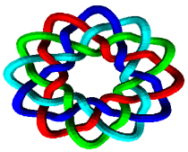

Usted podría estar interesado en entrelaçados celtos porque vio una página iluminada de una Biblia medieval como el Libro de Kells, que se puede encontrar en el Trinity College en Dublín.
Es posible que desee tratar de hacer cosas similares, como esta página que he iluminado para un artículo que escribí en Pour la Science, la versión francesa de Scientific American. Caligrafía de Chantale Fachinetti.

 O usted quisiera tener un tatoo pero desafortunadamente el individuo abajo de la calle no es tan talentoso como Pat Fish que hace cosas muy agradables tales como la imagen en el derecho.
O usted quisiera tener un tatoo pero desafortunadamente el individuo abajo de la calle no es tan talentoso como Pat Fish que hace cosas muy agradables tales como la imagen en el derecho.
 Puedes incluso dibujar en la acera, al estilo #StreetMath .
Puedes incluso dibujar en la acera, al estilo #StreetMath .
 En Irlanda se puede tropezar contra las piedras que prueban que estos patrones no son sólo las últimas cosas de moda.
En Irlanda se puede tropezar contra las piedras que prueban que estos patrones no son sólo las últimas cosas de moda.
Debido a que los nudos y los entrelaçados han estado alrededor durante bastante tiempo.
 Y si los europeos los llaman celtas, la gente de la India los conoce por más tiempo (véase ISKFA06) y el mundo islámico se jacta de técnicas mucho más elaboradas que los celtas. Visita Craig Kaplan website para un maravilloso programa en java sobre mosaico islámico y enrtelaçados.
Y si los europeos los llaman celtas, la gente de la India los conoce por más tiempo (véase ISKFA06) y el mundo islámico se jacta de técnicas mucho más elaboradas que los celtas. Visita Craig Kaplan website para un maravilloso programa en java sobre mosaico islámico y enrtelaçados.
Alcance
En este tutorial, usted va a aprender, en menos de una hora, cómo dibujar tales diseños. La técnica se resume en la siguiente imagen.

Un gráfo (en rojo) codifica un nudo. Para construirlo, se colocan pequeños cruces en el centro de cada arista entre dos vertices. A continuación, un simple laberinto procedimiento le permite unir estos pequeños trozos de hilos en líneas continuas que se puede suavizar. Después de eso, dibuja el patrón de sobre / bajo, usando una guía fácil. Finalmente infla su nudo, como una carretera en la que los hilos anteriores son la línea amarilla en el centro de la carretera. ¡Y ha terminado, es así de simple! Observe por favor que no estoy preocupado aquí con otros diseños célticos. Usted puede encontrar excelentes libros sobre estos, por ejemplo, el que escribió el gran artista Aidan Meehan.
Cari Buziak trata este tipo de cosas también, así como dominar entrelaçados.

 De hecho, es tan fácil que una computadora puede hacer eso, hay varias implementaciones de mis métodos. Los mejores son KnotPlot, KnotScape, Steven Abbott, y el magnífico KnotsBag.
De hecho, es tan fácil que una computadora puede hacer eso, hay varias implementaciones de mis métodos. Los mejores son KnotPlot, KnotScape, Steven Abbott, y el magnífico KnotsBag.

Este tutorial se deriva de dos series de cursos de técnicas de iluminación que dí en la escuela de caligrafía del Instituto Alcuin en St Cyr sur Loire en 1994 y 1996. Agradezco a Richard Forestier, Chantale Facchinetti y Agnès-Frédérique Forestier por tener la gracia y paciencia de acogerme. Sin sus cuidados e interés por el tema y sus pasiónes por las cosas bien hechas, yo nunca habría preparado este tutorial y fue gracias a ellos que he elaborado formas de describir inteligiblemente los objetos matemáticos (muy simple para un matemático) que forman el Base de la teoría. Les doy las gracias aquí.
El curso realmente comienza desde los fundamentos.